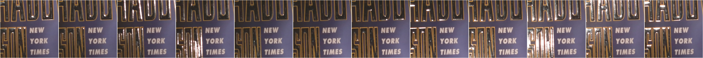
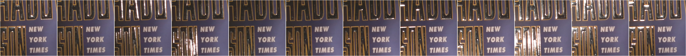

{kind=link}
{kind=link}
{kind=link}
{kind=link}
 

{kind=link}
Dataset
A total of 80 real material samples were captured in a dark room. For each material, multiple captures were collected at different distances from the camera (between 250 and 650 mm) to observe both macro- and micro-level details. The dataset is mostly comprised of planar specimens but also includes non-planar objects such as mugs, globes, crumpled paper, etc. As shown above, it contains a rich diversity of materials, including diffuse or specular wrapping papers, fabrics, anisotropic metals, plastics, rugs, ceramic and wood flooring samples, etc. Each capture set includes 12 LDR (8 bpp) RGB-D images at 4K pixel resolution. Each set is captured at 50% and 100% of maximum light intensity. In total, we captured 462 such image sets (combinations of light intensities, distances to the camera, and material sample).
Each capture set includes 12 LDR (8 bpp) RGB-D images at 4K pixel resolution. Each set is captured at 50% and 100% of maximum light intensity (LED50 and LED100 suffix). In total, we captured 462 such image sets (combinations of light intensities, distances to the camera, and material sample).
In our experiments, only 256x256 RGB crops at 100% light intensity are used (see paper). This smaller dataset is provided below.
Cite
@INPROCEEDINGS{
asselin2020svbrdf,
author={L. -P. {Asselin} and D. {Laurendeau} and J. -F. {Lalonde}},
booktitle={2020 International Conference on 3D Vision (3DV)},
title={Deep SVBRDF Estimation on Real Materials},
year={2020},
pages={1157-1166},
doi={10.1109/3DV50981.2020.00126}
}
Capture system
We propose the multi-light capture system which is composed of a Kinect Azure RGB-D camera surrounded by a 225mm radius ring of 12 equally-spaced LEDs. All components are mounted rigidly on a custom 3D-printed frame. The LEDs, numbered from 0 (North) and incrementing clockwise, can be switched on/off individually in a round-robin fashion and in sync with the camera (thanks to the Kinect Azure sync line). LED intensity can be adjusted via a 500Hz PWM signal. The system can capture 4K videos at a frame rate of up to 15FPS, where each frame corresponds to a different light direction. In all, a full 12-frame capture can be acquired in less than 1 second. Prototyping album
La Couronne
{kind=link}
Acknowledgements
This work was supported by the REPARTI Strategic Network and the NSERC/Creaform Industrial Research Chair on 3D Scanning: CREATION 3D. We thank Charles Asselin for helping with data capture, Pierre Robitaille for electronics, Yannick Hold-Geoffroy for his invaluable proofreading skills, and Nvidia with the donation of GPUs.